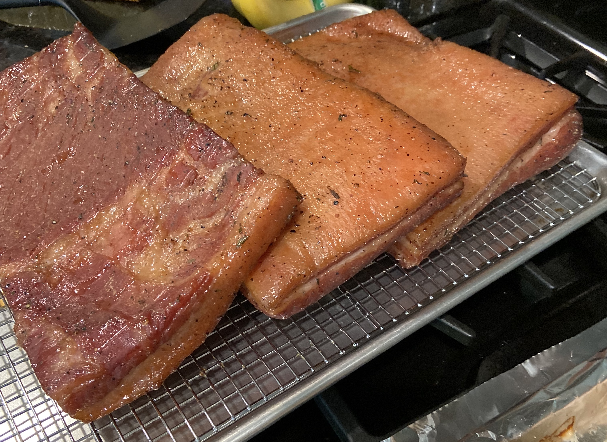

Bacon

Ingredients
- 1 cup maple sugar
- ½ cup Diamond Crystal kosher salt
- 1 tablespoon peppercorns, cracked
- 2 teaspoons minced fresh thyme
- ¾ teaspoon pink salt
- 1 bay leaf, crumbled
- 1 (4-pound) pork belly, skin removed if necessary
- Wood chips or chunks for smoking
Steps
- Combine sugar, salt, peppercorns, thyme, pink salt, and bay leaf in small bowl.
- Place pork belly in 13 by 9-inch baking dish and rub all sides and edges with dry cure mixture.
- Cover dish tightly with plastic wrap and refrigerate until pork feels firm yet still pliable, 7 to 10 days, flipping meat every other day.
- Thoroughly rinse pork with cold water and pat dry with paper towels.
- Depending on your grill/smoker, adjust wood and ventilation to smoke until pork registers 150°, 2-4 hours usually.
- Remove bacon from smoker and let cool completely before slicing. Bacon can be wrapped tightly and refrigerated for up to 1 month.
Serving notes
Since the bacon is fully cooked at this point, it can be served cold; thinly sliced as part of a salad. For
traditional breakfast bacon, slice to desired thickness and cook on wire rack at 400° for 35 minutes; rotating and flipping ½ way through.
Home